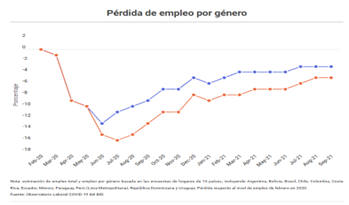

Este trabajo investigativo ha sido realizado para enforcanos en la “Trayectoria laboral por sexo”, empezaremos en conceptualizar para entender inicialmente porque la historia le ha dado ese enfoque tanto a mujeres como hombres, revisar que otros factores afectan esta trayectoria y se vuelven condicionantes, poder revisar como se encuentra actualmente Colombia y Latinoamérica en ese camino laboral que tanto influye en el desarrollo laboral, profesional, personal y familiar para un ser humano.
En primera instancia es importante entender a lo que le llamamos trayectoria laboral por sexo y encontramos varios autores que no lo pueden definir de la siguiente manera: “La trayectoria laboral u ocupacional, es una noción asociada a la clásica noción socio- lógica de “movilidad social” entendida como el movimiento de los individuos y los grupos entre las distintas posiciones socioeconómica, en relación con una escala (Giddens, 2001). Y también como “La trayectoria laboral puede ser definida como las distintas etapas por las que pasa un individuo al finalizar su formación o al insertarse en el circuito (Jiménez Vásquez, 2009).
Estas trayectorias laborales son condicionadas o codependientes a unos factores entre los cuales encontramos, específicamente para nuestro tema investigativo será revisado desde el “sexo o género”, y es que vemos que a través de la historia se le ha asignado un rol a la mujer y al hombre, donde la mujer se le ha atribuido un rol subordinado con respecto al hombre. Donde las conductas socialmente vistas con aceptación es donde la mujer asume el cuidado de la casa, algunos autores lo citan de la siguiente manera:
La mujer lleva adscripto el rol de ama de casa, madre, socializadora y mediadora, productora y reproductora de lo cotidiano […] La naturalización de los roles asignados a las mujeres ocultan la regulación jerárquica de los afectos, del sexo, del uso del dinero, del proceso de toma de decisiones, encubriendo relaciones de poder (Chitarroni, 2002) al interior de la familia y de la sociedad, y mecanismos de dominio en diversas esferas de la vida. Esto ocurre especialmente en la esfera de la producción social y económica. Específicamente “la esfera ocupacional constituye uno de los campos donde más se evidencia la discriminación de las mujeres en materia económica” (Lo Vuolo, 1998).
Pero no podemos quedarnos en esta etiqueta impuesta por la sociedad, sino que también se deben revisar los siguientes factores según el estudio: “Evolución De Las Diferencias Salariales Por Sexo En Seis Países De América Latina Un Intento De Interpretación” (JAIME TENJO G., 2005): puede deber a alguno(s) de las siguientes razones: La posibilidad de discriminación en el mercado laboral, las diferencias en productividad surgidas de diferencias en inversión en capital humano (educación y experiencia), Diferencias en productividad surgidas de prácticas discriminatorias en otros niveles de la sociedad, como en el acceso a la educación o a la existencia de sistemas educativos de diferentes calidad para hombres y mujeres y Diferencias en oferta laboral y preferencias (diferencias compensatorias). Las preferencias pueden ser endógenas, a través de los procesos de educación y socialización
La trayectoria laboral en Colombia se puede revisar desde ciertas brechas y estadísticas, en el informe “Discriminación salarial por sexo en Colombia: un análisis desde la discriminación estadística” (Karime, 2005) nos explican que el mercado laboral existe grandes agujeros laborales incluyendo la diferencia de salarios por sexo que no siempre pueden ser revisadas desde las diferencias educativas o por experiencia convirtiéndose en una discriminación laboral, algo que queda totalmente demostrado con los autores como Jaime Tenjo, Rocío Rivero, Luisa Fernanda Bernat (2002) en “Evolución de las diferencias salariales por sexo en seis países de América Latina” donde por medio de un estudio estadístico de ecuaciones de Mincer demuestran que los hombres si tienen una ventaja significativa aun donde las mujeres son mucho mas competitivas a nivel educativo y rendimiento laboral por lo tanto concluyen que estos resultados encajan perfectamente con la teoría de discriminación estadística.
El estudio también revela que en Colombia las mujeres han tenido tasas de desempleo significativamente mayores que los hombres durante los 20 años analizados y se estimó que esto ha redundado en un componente creciente de las diferencias en el salario esperado de hombres y mujeres. Y como respuesta a estas problemáticas de desigualdades los gobiernos han creado políticas de cuota mínima, mayores beneficios en descuentos tributarios o uno de los últimos mayor % en subsidios de PAEF y PAP por contratación de mujeres. Pero también argumentan que dichas medidas tienen un efecto negativo de corto plazo en términos de eficiencia productiva y de costos, pero pueden tener beneficios de largo plazo tanto en términos de equidad y de eficiencia social que es lo que se ha venido logrando no solo en Colombia sino a nivel Latinoamericano.
Actualmente y a raíz de la pandemia afrontada mundialmente el Observatorio Laboral Covid-19 del BID logro una estimación de la perdida laboral a septiembre 2021 en 15 países incluyendo Colombia donde se pudo evidenciar que para el 2020 la perdida de empleos mas precipitada fue para las mujeres como lo muestra la grafica de “Perdida de empleo por género” (Torres, 2021) y que para septiembre 2021 la tasa de pérdida de empleo femenino era del 5%, mientras que la de los hombres era del 3%. Es por ello que reactivar y reconfigurar el empleo femenino es central para la recuperación económica, como destaca la Visión 2025 del Grupo BID.
A nivel latinoamericano se han diseñado políticas de subsidio directos e indirectos para fomentar el trabajo femenino, Jaime Tenjo y los otros autores explican que estos subsidios se conciben como un reconocimiento de que para los empleadores puede ser más costos emplear mujeres y que para las mujeres puede ser más costoso (costo de oportunidad) aceptar trabajos en el mercado. Dentro de este tipo de subsidios se encuentra la compensación por las licencias de maternidad, las guarderías y jardines infantiles, para infantes y aún para niños en edad escolar, etc. (JAIME TENJO G., 2005)
En consecuencia, con todo lo anterior, se puede considerar que las transformaciones en la conformación del mercado laboral y en las estrategias de gestión de la producción y de la fuerza de trabajo, han tenido un inevitable impacto sobre la trayectoria laboral de los individuos, haciéndola cada vez más precaria, más larga y más pobre, y con posibilidades de desarrollarse en condiciones de inestabilidad, desregulación e incertidumbre, trayendo como consecuencia la evidente pérdida de las protecciones sociales (Castel, 2004; Castells, 2005; Castillo, et al, 2005).
Y es que hasta que no logremos una igualdad de genero empezando desde la educación y un dato muy importante para entender esta brecha es que “por cada 100 hombres escolarizados en grados superiores hay 64 mujeres” (Redacción, 2015) de ahí para adelante no va a mejor significativamente llegando al campo laboral que luego define tu estabilidad y continuo crecimiento como individuo de una sociedad y es que es inevitable que las mujeres aun sean consideradas diferente a los hombres y que sean etiquetadas como las responsables de la casa, poniendo ante los ojos de un empleador una discriminación directa porque una mujer mas un estado de casada representa menos horas laboradas, ya que debe responder por su casa y eso sin pensar que tiene hijos o quiera tenerlos porque en ese punto empiezan a disminuir horas laborables junto a las licencias de maternidad como otro agravante más.
Las mujeres en el trabajo contribuyen de una manera muy significativa a la economía de los países, otro dato impactante de la desigualdad de género en el periódico de Nueva España donde citan textualmente: “La desigualdad en el entorno laboral se hace evidente en la brecha salarial y en el tipo de trabajo y condiciones que desempeñan muchas mujeres. Muy pocas ocupan puestos directivos.” (Redacción, 2015). Donde un promedio del 50% de las mujeres del mundo tienen un empleo remunerado lo cual con comparación a la de década de los 90 aumento un 10%, adicional las mujeres ganan entre un 10% y 30% menos que los hombres por realizar el mismo trabajo lo cual fue basado en estudio de 83 países.
En mi opinión a esta investigación y conclusiones realizadas, basada en experiencias reales de vida es evidente que falta mucho para lograr una igualdad de género y poder quitar esos prototipos que nos han impuesto los pasados históricos a las mujeres, aunque ha sido una lucha constante es increíble que los avances han sido más bien lentos y que lamentablemente los gobiernos tengan que promover políticas mundiales para que se nos respete en todos los campos y se nos deje de subestimar demuestra que todavía hay muchas brechas entre géneros, y tratando de solventar estas brechas pueden llegar a los extremos de la favorabilidad por el simple hecho de ser mujeres y se convierte en un circulo vicioso de NO igualdad de géneros.
Encontrar un equilibrio de esta igualdad es nuestra principal tarea, en la trayectoria laboral que personalmente he tenido de casi 11 años siempre pude notar significativamente como a un hombre con las mismas capacidades de una mujer se le pagaba 2 o 3 veces mas el salario. Un ejemplo real de vida fue cuando estaba terminando mi especialización en Finanzas y Administración Pública de la Universidad Militar con un pregrado en Contaduría Publica me pagaban un sueldo muy inferior al de un compañero muy cercano que apenas tenía un técnico en sistemas de calidad sin certificado, lo cual me hizo replantear mi papel como mujer en esta empresa y por consiguiente en mi país, hacerme preguntas que tenía él que no tenia yo, o porque el ganaba mucho más si teníamos responsabilidades muy parecidas y adicional yo era una persona más preparada a nivel educativa para esos momentos.
Todas estas situaciones a futuro piden a gritos políticas públicas más efectivas empezando por una nivelación de salarios por género en sectores públicos-privados, también lograr que las licencias de maternidad logren ser equitativamente compartidas entre hombres y mujeres, dejar de pensar en quienes son más fuertes u organizados y detallistas para ciertas funciones, o como somos bien vistos para una sociedad, ejemplo ¡la política es para machos!
Castel. (2004). La inseguridad social. Buenos Aires: Manantial.
Chitarroni, H. M. (2002). Un estudio de la violencia en la pareja. Buenos Aires: Prisma: Vínculos violentos.
Giddens, A. (2001). Sociología.
JAIME TENJO G., R. R. (2005). Evolución De Las Diferencias Salariales Por Sexo En Seis Países De América Latina Un Intento De Interpretación. UNIVERSIDAD DE LOS ANDES-CEDE, DOCUMENTOS CEDE.
Jiménez Vásquez, M. (2009). Trayectorias laborales y movilidad de los biólogos agropecuarios de la Universidad Autónoma de Tlaxcala. Perfiles educativos.
Karime, A. A. (2005). DISCRIMINACIÓN SALARIAL POR SEXO EN COLOMBIA: UN ANÁLISIS DESDE LA DISCRIMINACIÓN ESTADÍSTICA. Bogotá.
Lo Vuolo, R. y. (1998). Del trabajo a la casa… a seguir trabajando. La discriminación por género frente a los cambios en el mercado de trabajo. Buenos Aires: Mujeres en los ’90, vól. II.
Manuel, C. (1999). “La sociedad red, la era de la información". Madrid: Siglo veintiuno.
Redacción. (08 de 03 de 2015). Los 8 datos más impactantes sobre la desigualdad de género. la Nueva España.
Torres, O. A.-M.-E. (21 de 12 de 2021). 2022: ¿hacia un nuevo paradigma del empleo en América Latina y el Caribe? BID.